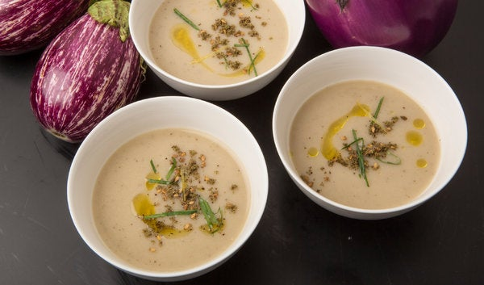

Smoky Eggplant Soup

Description
I am a fan of eggplant soup, and this one is a winner, creamy-textured and bright tasting. Charring the eggplant gives it a smoky flavor, but as opposed to some rustic versions, the soup has a smooth texture and a lovely pale color. It gets a good squeeze of lemon juice, a drizzle of olive oil and a sprinkling of the Middle Eastern spice mixture za’atar, made with wild thyme and sesame, now widely available. Make sure to choose small, firm eggplants. Serve the soup chilled or hot, in small portions.
Ingredients
- 2 pounds small firm eggplants
- 5 tablespoons olive oil
- 2 cups yellow sliced onions
- Salt and pepper
- 6 garlic cloves, minced
- Pinch cayenne
- 6 cups chicken broth or mild vegetable broth
- 3 to 4 tablespoons lemon juice
- 1/2 teaspoon lemon zest
- 1 tablespoon za'atar, available in Middle Eastern groceries
- 2 teaspoons chopped parsley
Steps
- Poke 2 or 3 holes in eggplants with a paring knife, then place on a baking sheet under hot broiler, about 2 inches from flame. Cook for 3 or 4 minutes, allowing skins to blacken and char. Turn and cook on other side until eggplants have softened completely, about 4 minutes more. Set aside to cool, then remove and discard skins and roughly chop eggplant flesh.
- Meanwhile, put 3 tablespoons olive oil in a heavy-bottomed stainless or enameled soup pot over medium-high heat. Add onion, season generously with salt and pepper, and cook until softened and beginning to color, 5 to 7 minutes. Add garlic, cayenne and reserved eggplant and cook 1 minute more, then add broth and bring to a brisk simmer. Reduce heat and simmer gently for 10 minutes. Check seasoning of broth and adjust salt.
- Purée soup in batches in blender. Strain through fine-meshed sieve and discard solid debris and seeds. Add 3 tablespoons lemon juice to puréed soup and taste again, adding more as necessary. Soup should be well seasoned and rather lemony.
- Mix lemon zest with remaining 2 tablespoons olive oil for garnish. Ladle soup into small bowls, topping each bowl with 1 teaspoon lemon oil, ½ teaspoon za’atar and some chopped parsley. May be served hot or cold.